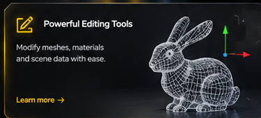
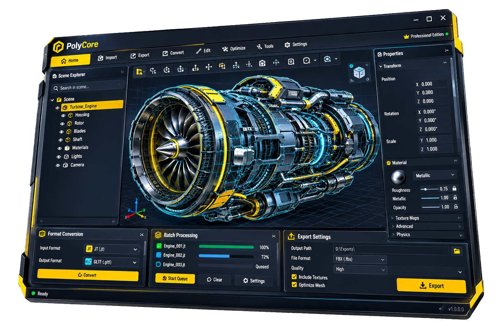
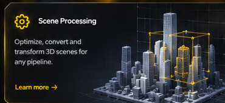
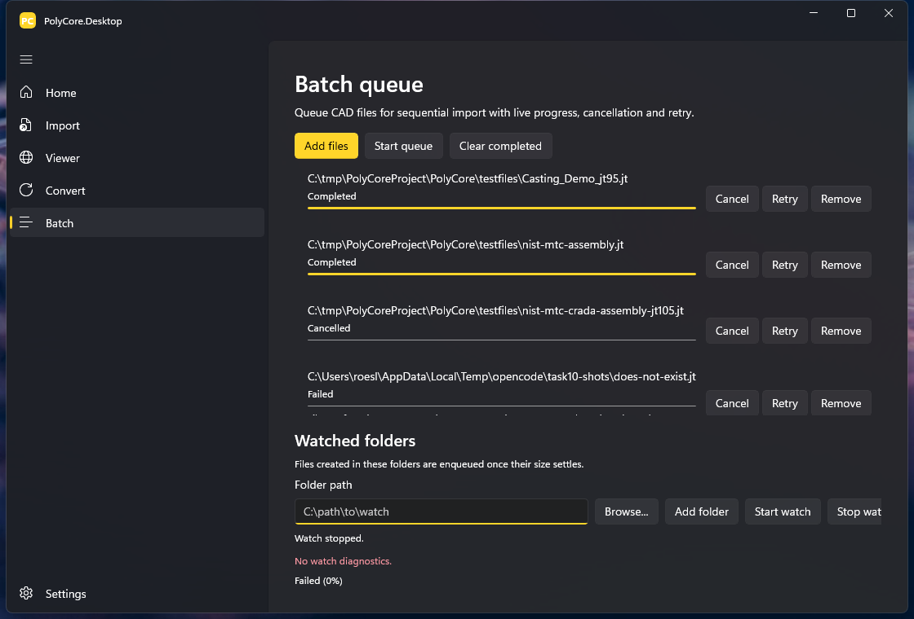
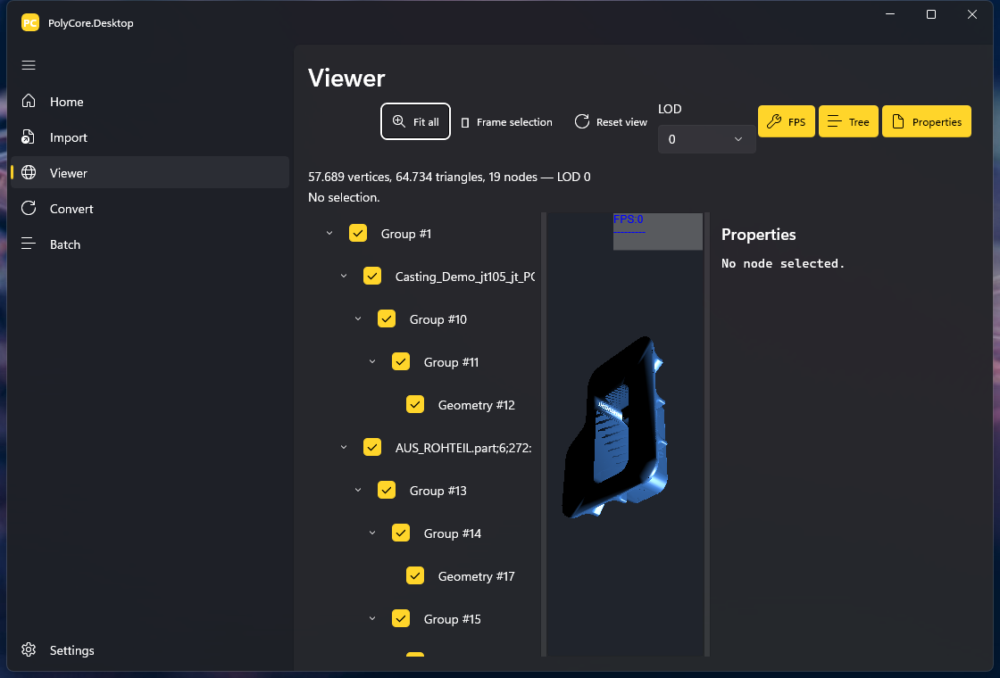
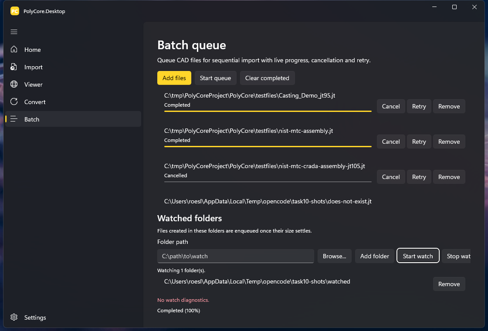

Concept
Mesh & Scene Editing
Inspect geometry, scene hierarchy, transforms, materials and metadata. Proposed operations include mesh repair, selection and primitive editing.
Format coverage →A modular feature set, from file access and inspection to conversion, optimization and production automation. Each card carries its own state label: most are proposed capabilities, while the batch queue and watched folders are internal and tested in the private desktop app, not shipped features.
Use the visual tour to explore the planned workflow. These are product concept illustrations, not screenshots from a released application.
See the architecture ↗

Inspect geometry, scene hierarchy, transforms, materials and metadata. Proposed operations include mesh repair, selection and primitive editing.
Format coverage →
Profile-based conversions with explicit options for scale, axis, materials, textures, animation and metadata preservation.
Explore formats →
Proposed decimation, mesh merging, texture compression, LOD generation and validation presets.

Queue-based processing and watched folders are internal and tested in the private desktop app. Scripting hooks, reusable profiles and machine-readable reports remain planned.

Profiling, memory diagnostics, processing metrics and reproducible benchmark harnesses.

Proposed offline deployment, policy controls, SDK licensing, custom adapters and support packages.
Unmodified captures from the standalone x64 Release build. The Viewer shows a decoded JT 9.5 fixture; the Batch page shows an active watched folder and a watcher-enqueued job. Details in the screenshot manifest.


The design goal is a stable internal scene representation so application code does not need format-specific branches for every common operation.
Read/write coverage and advanced data support are tracked separately.